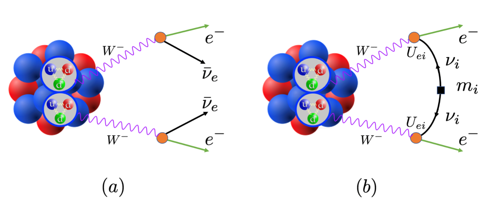

Contact
- xxx xxx
- Nuclear Theory and Nuclear Astrophysics Group,Sun Yat-sen University
- xxxx@mail.sysu.edu.cn
- xxxxxxxx
- 中国广东省珠海市香洲区唐家湾大学路2号中山大学
Research
Research interests
-
1.无中微子双贝塔衰变
无中微子双贝塔衰变是当前国际上粒子物理与核物理研究领域的重要科学前沿，是可能突破粒子物理标准模型的研究方向之一 。通过寻找原子核无中微子双贝塔衰变有望回答或者解决一些基本的科学问题，包括轻子数是否守恒，中微子是否具有马约拉纳属性以及中微子的绝对质量标度等。这些问题的回答以及解决有助于理解宇宙中正反物质不对称之谜等重大科学问题。
 图1. 原子核发生(a)两中微子双贝塔衰变以及(b)标准衰变机制下无中微子双贝塔衰变示意图 鉴于无中微子双贝塔衰变的重要研究意义，我国自然科学基金委-中国学科发展战略丛书、美国能源部-核物理长期发展规划以及欧洲科学长期发展规划书中, 都把无中微子双贝塔衰变研究列为优先资助的大科学项目。在无中微子双贝塔衰变研究中，核矩阵元大小直接决定衰变的快慢，影响中微子质量确定的精度。因此核矩阵元的研究是最关键的理论研究课题之一。
-
2. 原子核结构的第一性原理计算
Publications
- 1. xxxxxxxx
- 2. bbbbbbbb
Fun
My FUN
Others
Others 1
description.......